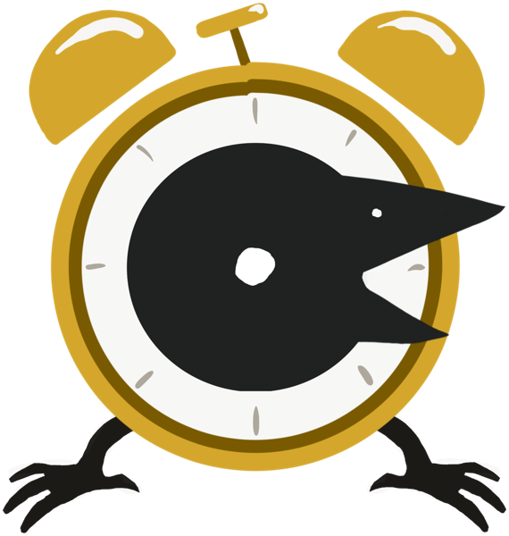

Privacy Policy
Crow Clock: Solar Reminders · Last updated November 20, 2026
Crow Clock doesn't track you, no matter how many peanuts you have. There are no accounts, ads, or analytics. Your reminders and settings stay on your device and are never sent to me.
Your location
Crow Clock uses your location to work out sunrise and sunset where you are. That math happens on your device, and your location is saved only on your device.
To show the name of a place, or to find a place you search for, Crow Clock asks Apple's location service. Apple's privacy policy covers that request.
App updates
Crow Clock checks Expo's update service for small fixes and design changes that don't need a full App Store download. Each check sends Expo your IP address and a random ID for this install, which isn't linked to you. If an update fails to start, Expo receives the error message so it can be fixed. This is used to deliver updates and count installs, and nothing else. Expo's privacy policy covers those checks.
Notifications
Reminders are scheduled on your device. They don't pass through any server.
Changes
If Crow Clock ever handles your data differently, this page will change first, with a new date at the top.
← Crow Clock